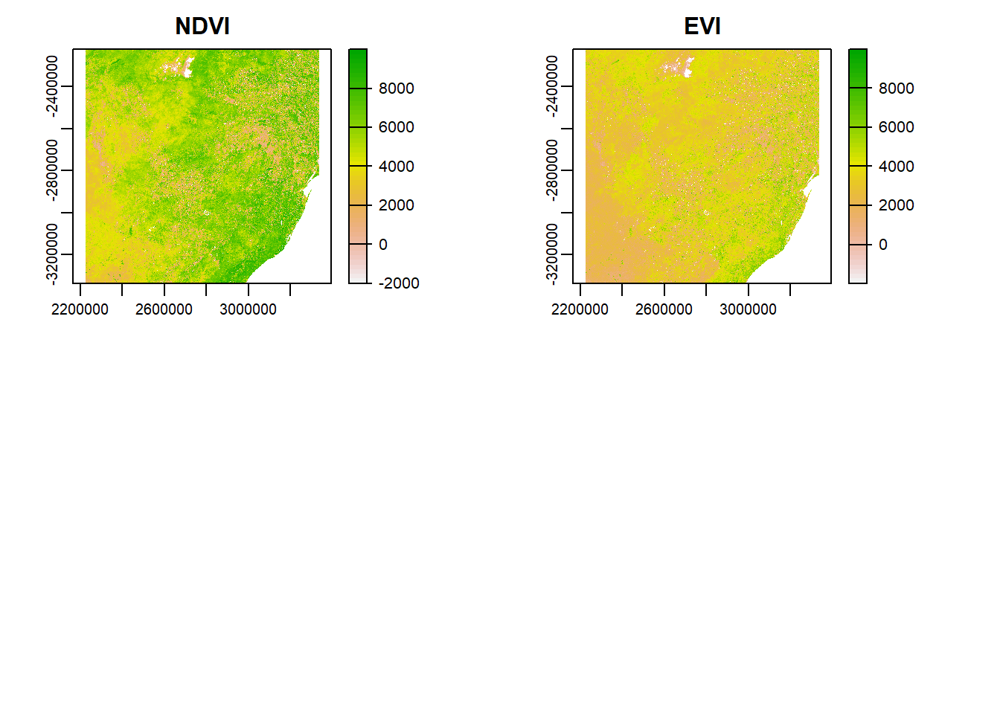
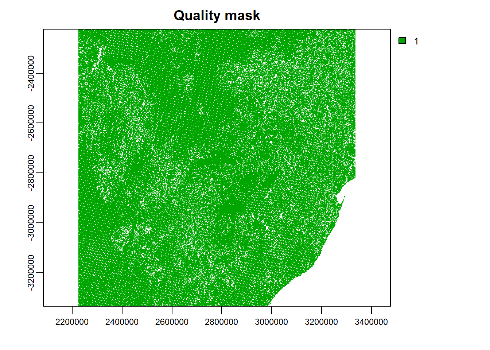
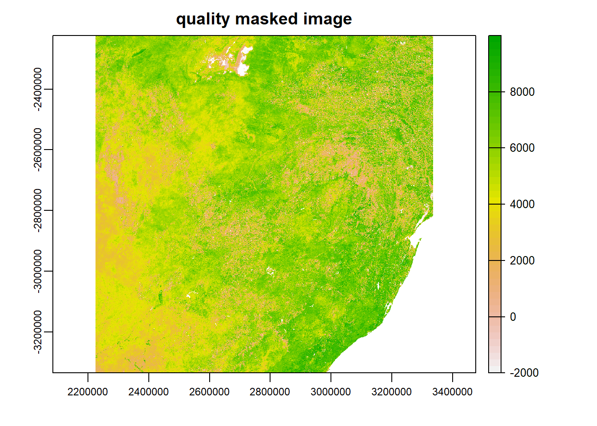
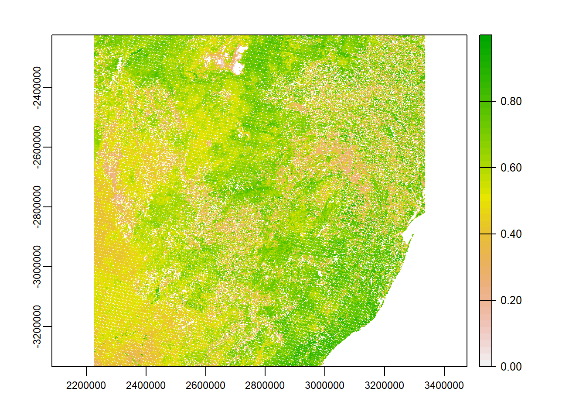

After downloading MODIS data, it is necessary to apply quality mask to the desired image bands. The quality flags that come with the images indicate the conditions of each pixel with respect cloud, aerosol, water presence, and any other failures/errors. This section covers these aspects.
Here we load previously downloaded NDVI and EVI files and define scale factor their scale factor.
rm(list = ls(all=TRUE))
unlink(".RData")
sf <- 0.0001 #scalefactor
root <- 'D:/JKUAT/RESEARCH_Projects/Eswatini/Data/MODIS/'
n <- list.files(paste0(root,'raw'), pattern=glob2rx("*MOD13Q1*"),full.names=T)
length(n)## [1] 221Properties of any of the images can be explored as follows:
library(terra)## terra version 1.2.10r <- rast(n[1])
r## class : SpatRaster
## dimensions : 4800, 4800, 12 (nrow, ncol, nlyr)
## resolution : 231.6564, 231.6564 (x, y)
## extent : 2223901, 3335852, -3335852, -2223901 (xmin, xmax, ymin, ymax)
## coord. ref. : +proj=sinu +lon_0=0 +x_0=0 +y_0=0 +R=6371007.181 +units=m +no_defs
## sources : MOD13Q1.A2000049.h20v11.006.2015136104756.hdf:MODIS_Grid_16DAY_250m_500m_VI:250m 16 days NDVI
## MOD13Q1.A2000049.h20v11.006.2015136104756.hdf:MODIS_Grid_16DAY_250m_500m_VI:250m 16 days EVI
## MOD13Q1.A2000049.h20v11.006.2015136104756.hdf:MODIS_Grid_16DAY_250m_500m_VI:250m 16 days VI Quality
## ... and 9 more source(s)
## names : MODIS~NDVI", MODIS~ EVI", MODIS~lity", MODIS~ance", MODIS~ance", MODIS~ance", ...crs(r)## [1] "PROJCRS[\"unnamed\",\n BASEGEOGCRS[\"Unknown datum based upon the custom spheroid\",\n DATUM[\"Not specified (based on custom spheroid)\",\n ELLIPSOID[\"Custom spheroid\",6371007.181,0,\n LENGTHUNIT[\"metre\",1,\n ID[\"EPSG\",9001]]]],\n PRIMEM[\"Greenwich\",0,\n ANGLEUNIT[\"degree\",0.0174532925199433,\n ID[\"EPSG\",9122]]]],\n CONVERSION[\"unnamed\",\n METHOD[\"Sinusoidal\"],\n PARAMETER[\"Longitude of natural origin\",0,\n ANGLEUNIT[\"degree\",0.0174532925199433],\n ID[\"EPSG\",8802]],\n PARAMETER[\"False easting\",0,\n LENGTHUNIT[\"Meter\",1],\n ID[\"EPSG\",8806]],\n PARAMETER[\"False northing\",0,\n LENGTHUNIT[\"Meter\",1],\n ID[\"EPSG\",8807]]],\n CS[Cartesian,2],\n AXIS[\"easting\",east,\n ORDER[1],\n LENGTHUNIT[\"Meter\",1]],\n AXIS[\"northing\",north,\n ORDER[2],\n LENGTHUNIT[\"Meter\",1]]]"dim(r)## [1] 4800 4800 12nrow(r)## [1] 4800ncol(r)## [1] 4800nlyr(r)## [1] 12ncell(r)## [1] 23040000res(r)## [1] 231.6564 231.6564names(r)## [1] "MODIS_Grid_16DAY_250m_500m_VI:\"250m 16 days NDVI\""
## [2] "MODIS_Grid_16DAY_250m_500m_VI:\"250m 16 days EVI\""
## [3] "MODIS_Grid_16DAY_250m_500m_VI:\"250m 16 days VI Quality\""
## [4] "MODIS_Grid_16DAY_250m_500m_VI:\"250m 16 days red reflectance\""
## [5] "MODIS_Grid_16DAY_250m_500m_VI:\"250m 16 days NIR reflectance\""
## [6] "MODIS_Grid_16DAY_250m_500m_VI:\"250m 16 days blue reflectance\""
## [7] "MODIS_Grid_16DAY_250m_500m_VI:\"250m 16 days MIR reflectance\""
## [8] "MODIS_Grid_16DAY_250m_500m_VI:\"250m 16 days view zenith angle\""
## [9] "MODIS_Grid_16DAY_250m_500m_VI:\"250m 16 days sun zenith angle\""
## [10] "MODIS_Grid_16DAY_250m_500m_VI:\"250m 16 days relative azimuth angle\""
## [11] "MODIS_Grid_16DAY_250m_500m_VI:\"250m 16 days composite day of the year\""
## [12] "MODIS_Grid_16DAY_250m_500m_VI:\"250m 16 days pixel reliability\""sf <- 0.0001
par(mfrow=c(2,2),mar = c(4, 4, 1.4, 0.1)) #c(bottom, left, top, right)
temp <- r[[1]]
temp <- temp*sf
plot(temp, main='NDVI')
temp <- r[[2]]
temp <- temp*sf
plot(temp, main='EVI')
Reference to this table create quality flags based on ‘250m 16 days VI Quality’ band. Basically, pixels that are cloudy, faulty, have high aerosols, and with water are excluded/mask out. The quality information is stored in a somewhat complicated bit-encoding format. This allows for very efficient storage, but it makes it much harder to use (see Table 5 of the user guide).
from <- c(1,2,6,11)
to <- c(2,5,7,13)
reject <- c("10,11", "1101,1110,1111", "11", "101,110,111")
qa_bits <- cbind(from, to, reject)
qa_bits## from to reject
## [1,] "1" "2" "10,11"
## [2,] "2" "5" "1101,1110,1111"
## [3,] "6" "7" "11"
## [4,] "11" "13" "101,110,111"Unsuitable pixels can now be masked out based on the defined QA bits.
library(luna)
qc <- r[[3]]
quality_mask <- modis_mask(qc, 16, qa_bits)
plot(quality_mask, main="Quality mask")
The plot shows the pixels that pass the quality check (i.e., the pixels that shall be retained). Subsequently, the mask operation can be applied to all other images considering NDVI and EVI quality flags. For instance, the **NDVI* quality mask can be obtained as shown below. NB: NDVI and EVI data is the range of -2000–10000, see USGS.
temp <- r[[1]]*sf
rmask <- mask(temp, quality_mask)
plot(temp,main='quality masked image')
If need be, the data can be normalized using minimum and maximum values of the image. However, later we will use Z-scores to standardize the data and detect long term anomalies of the index.
minMax <- function(x){
if(class(x)=="SpatRaster"){
z <- minmax(x)
y <- (x-z[1])/(z[2]-z[1])
return(y)
}else{
print("x is not a SpatRaster object")
}
}Normalize the image.
nrmask <- minMax(rmask)
plot(nrmask)
Previous section has illustrated how quality assurance (QA) can be applied to an image using NDVI as an example. The same process can be applied to EVI. In this section, the quality assurance information available in the third band of MOD13Q1 product is used to identify the bad pixels to remove in both NDVI and EVI images. The indices are then spatial aggregated over Eswatini boundary.
library(raster)## Loading required package: spsz <- getData("GADM", country="SWZ", level=0)
#Change vector boundary coordinate reference system, so that it matches that of the MODIS data.
prj <- crs(rmask)
poly <- project(vect(sz),prj)
for(i in 1:length(n)){
path <- paste0(root,'processed/')
filename <- paste0(path,gsub(".hdf","",basename(n[i])),'.tif')
if(!file.exists(filename)){
r <- rast(n[i])
qc <- r[[3]]
quality_mask <- modis_mask(qc, 16, qa_bits)
#NDVI
temp <- r[[1]]*sf
ndvi <- mask(temp, quality_mask)
names(ndvi) <- "NDVI"
#EVI
temp <- r[[2]]*sf
evi <- mask(temp, quality_mask)
names(evi) <- "EVI"
temp <- c(ndvi, evi)
path <- paste0(root,'processed/')
filename <- paste0(path,gsub(".hdf","",basename(n[i])),'.tif')
#Crop to AOI
out <- crop(temp, poly)
writeRaster(out, filename, overwrite=TRUE)
}
}Gross Primary Productivity (GPP) and Fraction of Photosynthetically Active Radiation (FPAR)/ Leaf Area Index (LAI) (MCD15A2H) monthly can be computed in a similar way like the vegetation indices done previously. Start by processing FPAR/LAI; below are the files.
n <- list.files(paste0(root,'raw'), pattern=glob2rx("*MCD15A2H*"),full.names=T)
length(n)## [1] 368Here, QA information available in Table 5 of the user guide is applied and AOI files for FPAR/LAI saved to disk. in
from <- c(2,3,5)
to <- c(2,4,7)
reject <- c("1", "01", "100")
qa_bits <- cbind(from, to, reject)
qa_bits## from to reject
## [1,] "2" "2" "1"
## [2,] "3" "4" "01"
## [3,] "5" "7" "100"for(i in 1:length(n)){
path <- paste0(root,'processed/')
filename <- paste0(path,gsub(".hdf","",basename(n[i])),'.tif')
if(!file.exists(filename)){
r <- rast(n[i])
qc <- r[[3]]
quality_mask <- modis_mask(qc, 8, qa_bits)
#FPAR
sf <- 100
temp <- r[[1]]*sf
fpar <- mask(temp, quality_mask)
names(fpar) <- "FPAR"
#LAI
sf <- 10
temp <- r[[2]]*sf
lai <- mask(temp, quality_mask)
names(lai) <- "LAI"
temp <- c(fpar, lai)
#Crop to AOI
out <- crop(temp, poly)
writeRaster(out,filename,overwrite=TRUE)
}
}Finally, in a similar fashion QA information can applied be to MODIS GPP (MOD17A2H) product to obtain monthly GPP. The QA bits in this case are similar to those in FPAR/LAI.
n <- list.files(paste0(root,'raw'), pattern=glob2rx("*MOD17A2H*"),full.names=T)
length(n)## [1] 265for(i in 1:length(n)){
path <- paste0(root,'processed/')
filename <- paste0(path,gsub(".hdf","",basename(n[i])),'.tif')
if(!file.exists(filename)){
r <- rast(n[i])
qc <- r[[3]]
quality_mask <- modis_mask(qc, 8, qa_bits)
temp <- r[[1]]
gpp <- mask(temp, quality_mask)
names(gpp) <- "GPP"
#Crop to AOI
out <- crop(gpp, poly)
writeRaster(out, filename, overwrite=TRUE)
}
}PREVIOUS PAGE <<< >>> NEXT PAGE.
Created 14th May 2021 Copyright © Benson Kenduiywo, Inc. All rights reserved.